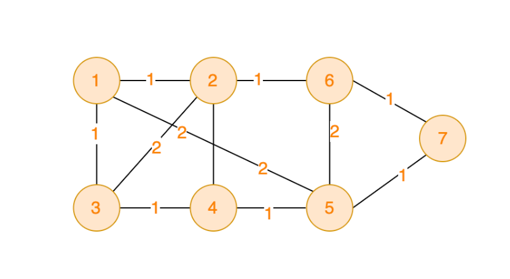
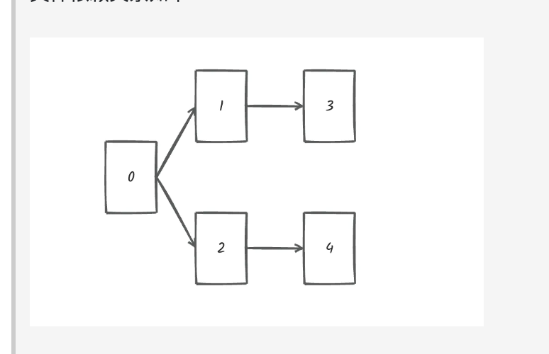

1.岛屿的数量797. 所有可能的路径200. 岛屿数量695. 岛屿的最大面积1020. 飞地的数量130. 被围绕的区域417. 太平洋大西洋水流问题827. 最大人工岛1971. 寻找图中是否存在路径463. 岛屿的周长并查集684. 冗余连接最小生成树寻宝拓扑排序软件构建
1.岛屿的数量
给你一个由 '1'（陆地）和 '0'（水）组成的的二维网格，请你计算网格中岛屿的数量。
岛屿总是被水包围，并且每座岛屿只能由水平方向和/或竖直方向上相邻的陆地连接形成。
此外，你可以假设该网格的四条边均被水包围。
xxxxxxxxxx//深度优先搜索:每搜到一个1就置为0//时间复杂度：O(MN)//空间复杂度：O(MN)递归的深度public int numIslands(char[][] grid) {
int nr=grid.length; int nc=grid[0].length; int res=0; for(int i=0;i<nr;i++){ for(int j=0;j<nc;j++){
if(grid[i][j]=='1'){
res++; dfs(grid,i,j); }
} }
return res; }
public void dfs (char[][]grid,int r,int c){
int nr=grid.length; int nc=grid[0].length;
if(r<0 || c<0|| r>=nr || c>=nc || grid[r][c]=='0'){
return; } grid[r][c]='0';
dfs(grid,r-1,c); dfs(grid,r+1,c); dfs(grid,r,c-1); dfs(grid,r,c+1); }xxxxxxxxxx//广度优先搜索//思路是遍历数组，每遇到一个1就创建一个队列，把他周围的1全都加进队列//时间复杂度：O(MN)//空间复杂度：O(MN)队列的长度public int numIslands(char[][] grid) {
int nr=grid.length; int nc=grid[0].length; int res=0; for(int i=0;i<nr;i++){
for(int j=0;j<nc;j++){
if(grid[i][j]=='1'){ res++; grid[i][j]='0'; Queue<Integer>q=new LinkedList<Integer>(); q.add(i*nc+j); while(!q.isEmpty()){ int size=q.size(); for(int k=0;k<size;k++){
int idx=q.remove(); int r=idx/nc; int c=idx%nc; grid[r][c]='0'; if(r-1>=0 && grid[r-1][c]=='1'){
q.add((r-1)*nc+c); grid[r-1][c]='0';
} if(c-1>=0 && grid[r][c-1]=='1'){
q.add(r*nc+c-1); grid[r][c-1]='0';
}if(r+1<nr && grid[r+1][c]=='1'){
q.add((r+1)*nc+c); grid[r+1][c]='0';
}if(c+1<nc && grid[r][c+1]=='1'){
q.add(r*nc+c+1); grid[r][c+1]='0';
} } } } } }
return res; }1.岛屿的数量797. 所有可能的路径200. 岛屿数量695. 岛屿的最大面积1020. 飞地的数量130. 被围绕的区域417. 太平洋大西洋水流问题827. 最大人工岛1971. 寻找图中是否存在路径463. 岛屿的周长并查集684. 冗余连接最小生成树寻宝拓扑排序软件构建
797. 所有可能的路径
给你一个有 n 个节点的 有向无环图（DAG），请你找出所有从节点 0 到节点 n-1 的路径并输出（不要求按特定顺序）
graph[i] 是一个从节点 i 可以访问的所有节点的列表（即从节点 i 到节点 graph[i][j]存在一条有向边）。
示例 1：

xxxxxxxxxx输入：graph = [[1,2],[3],[3],[]]输出：[[0,1,3],[0,2,3]]解释：有两条路径 0 -> 1 -> 3 和 0 -> 2 -> 3
xxxxxxxxxxclass Solution {
List<List<Integer>> result = new ArrayList<>(); List<Integer> path = new ArrayList<>();
public List<List<Integer>> allPathsSourceTarget(int[][] graph) {
path.add(0); backtracking(graph, 0); return result;
}
private void backtracking(int[][] graph, int curIdx) { if (path.get(path.size() - 1) == graph.length - 1) { result.add(new ArrayList<>(path)); return; }
int[] cur = graph[curIdx]; for (int i = 0; i < cur.length; i++) { path.add(cur[i]); backtracking(graph, cur[i]); path.remove(path.size() - 1); }
}}200. 岛屿数量
给你一个由 '1'（陆地）和 '0'（水）组成的的二维网格，请你计算网格中岛屿的数量。
岛屿总是被水包围，并且每座岛屿只能由水平方向和/或竖直方向上相邻的陆地连接形成。
此外，你可以假设该网格的四条边均被水包围。
示例 1：
xxxxxxxxxx输入：grid = [["1","1","1","1","0"],["1","1","0","1","0"],["1","1","0","0","0"],["0","0","0","0","0"]]输出：1
示例 2：
xxxxxxxxxx输入：grid = [["1","1","0","0","0"],["1","1","0","0","0"],["0","0","1","0","0"],["0","0","0","1","1"]]输出：3
xxxxxxxxxx//广度优先class Solution { public int numIslands(char[][] grid) {
int result = 0;
int m = grid.length; int n = grid[0].length;
for (int i = 0; i < m; i++) { for (int j = 0; j < n; j++) { if (grid[i][j] == '0') { continue; } result++; Queue<Integer> queue = new LinkedList<>(); queue.offer(i * n + j); grid[i][j] = '0'; while (!queue.isEmpty()) { Integer ch = queue.poll(); int idx = ch / n; int idy = ch % n;
if (idx - 1 >= 0 && grid[idx - 1][idy] == '1') { queue.offer((idx - 1) * n + idy); grid[idx - 1][idy] = '0'; } if (idx + 1 < m && grid[idx + 1][idy] == '1') { queue.offer((idx + 1) * n + idy); grid[idx + 1][idy] = '0'; } if (idy - 1 >= 0 && grid[idx][idy - 1] == '1') { queue.offer(idx * n + idy - 1); grid[idx][idy - 1] = '0'; } if (idy + 1 < n && grid[idx][idy + 1] == '1') { queue.offer(idx * n + idy + 1); grid[idx][idy + 1] = '0'; } }
} } return result;
}}
//深度优先
class Solution { public int numIslands(char[][] grid) { int result = 0; for (int i = 0; i < grid.length; i++) { for (int j = 0; j < grid[0].length; j++) { if (grid[i][j] == '1') { result++; dfs(grid, i, j); }
} } return result; }
private void dfs(char[][] grid, int i, int j) { if (i < 0 || j < 0 || i >= grid.length || j >= grid[0].length || grid[i][j] == '0') { return; }
grid[i][j] = '0';
dfs(grid, i - 1, j); dfs(grid, i + 1, j); dfs(grid, i, j - 1); dfs(grid, i, j + 1);
}}695. 岛屿的最大面积
给你一个大小为 m x n 的二进制矩阵 grid 。
岛屿 是由一些相邻的 1 (代表土地) 构成的组合，这里的「相邻」要求两个 1 必须在 水平或者竖直的四个方向上 相邻。你可以假设 grid 的四个边缘都被 0（代表水）包围着。
岛屿的面积是岛上值为 1 的单元格的数目。
计算并返回 grid 中最大的岛屿面积。如果没有岛屿，则返回面积为 0 。
xxxxxxxxxxclass Solution { int count = 0; public int maxAreaOfIsland(int[][] grid) { int result = 0; int m = grid.length; int n = grid[0].length; for(int i = 0; i < m; i++){ for(int j = 0; j < n;j++){ if(grid[i][j] == 1){ count = 0; dfs(grid,i,j); result = Math.max(result,count); } } } return result; }
private void dfs(int[][] grid, int i, int j){ int m = grid.length; int n = grid[0].length; if(i < 0 || j < 0 || i >= m || j >= n || grid[i][j] == 0){ return; } count++; grid[i][j] = 0; dfs(grid,i+1,j); dfs(grid,i-1,j); dfs(grid,i,j - 1); dfs(grid,i,j + 1);
}}1020. 飞地的数量
给你一个大小为 m x n 的二进制矩阵 grid ，其中 0 表示一个海洋单元格、1 表示一个陆地单元格。
一次 移动 是指从一个陆地单元格走到另一个相邻（上、下、左、右）的陆地单元格或跨过 grid 的边界。
返回网格中 无法 在任意次数的移动中离开网格边界的陆地单元格的数量。
xxxxxxxxxxclass Solution { int count = 0;
public int numEnclaves(int[][] grid) { int result = 0;
int m = grid.length; int n = grid[0].length; for (int i = 0; i < m; i++) { for (int j = 0; j < n; j++) { if (grid[i][j] == 0) { continue; } count = 0; if (dfs(grid, i, j)) { result += count; } } } return result;
}
private boolean dfs(int[][] grid, int i, int j) { int m = grid.length; int n = grid[0].length; if (i < 0 || j < 0 || i >= m || j >= n) { return false; }
if (grid[i][j] != 1) { return true; } count++; grid[i][j] = 2;
boolean left = dfs(grid, i - 1, j); boolean right = dfs(grid, i + 1, j); boolean bottom = dfs(grid, i, j - 1); boolean top = dfs(grid, i, j + 1);
return left && right && bottom && top;
}}130. 被围绕的区域
给你一个 m x n 的矩阵 board ，由若干字符 'X' 和 'O' 组成，捕获 所有 被围绕的区域：
连接：一个单元格与水平或垂直方向上相邻的单元格连接。
区域：连接所有
'0'的单元格来形成一个区域。围绕：如果您可以用
'X'单元格 连接这个区域，并且区域中没有任何单元格位于board边缘，则该区域被'X'单元格围绕。
通过将输入矩阵 board 中的所有 'O' 替换为 'X' 来 捕获被围绕的区域。
xxxxxxxxxxclass Solution { public void solve(char[][] board) { int m = board.length; int n = board[0].length;
for (int i = 0; i < m; i++) { dfs(board, i, 0); dfs(board, i, n - 1);
} for (int j = 1; j < n - 1; j++) { dfs(board, 0, j); dfs(board, m - 1, j);
}
for (int i = 0; i < m; i++) { for (int j = 0; j < n; j++) { if (board[i][j] == 'A') { board[i][j] = 'O'; } else if (board[i][j] == 'O') { board[i][j] = 'X'; } } }
}
private void dfs(char[][] board, int i, int j) { int m = board.length; int n = board[0].length;
if (i < 0 || j < 0 || i >= m || j >= n || board[i][j] != 'O') { return; } board[i][j] = 'A'; dfs(board, i - 1, j); dfs(board, i + 1, j); dfs(board, i, j - 1); dfs(board, i, j + 1);
}}417. 太平洋大西洋水流问题
有一个 m × n 的矩形岛屿，与 太平洋 和 大西洋 相邻。 “太平洋” 处于大陆的左边界和上边界，而 “大西洋” 处于大陆的右边界和下边界。
这个岛被分割成一个由若干方形单元格组成的网格。给定一个 m x n 的整数矩阵 heights ， heights[r][c] 表示坐标 (r, c) 上单元格 高于海平面的高度 。
岛上雨水较多，如果相邻单元格的高度 小于或等于 当前单元格的高度，雨水可以直接向北、南、东、西流向相邻单元格。水可以从海洋附近的任何单元格流入海洋。
返回网格坐标 result 的 2D 列表 ，其中 result[i] = [ri, ci] 表示雨水从单元格 (ri, ci) 流动 既可流向太平洋也可流向大西洋 。
xxxxxxxxxxclass Solution { public List<List<Integer>> pacificAtlantic(int[][] heights) { int m = heights.length; int n = heights[0].length; boolean[][] pacific = new boolean[m][n]; boolean[][] atlantic = new boolean[m][n]; List<List<Integer>> result = new ArrayList<>(); for (int i = 0; i < m; i++) { dfs(heights, pacific, i, 0); dfs(heights, atlantic, i, n - 1); }
for (int j = 0; j < n; j++) { dfs(heights, atlantic, m - 1, j); dfs(heights, pacific, 0, j); } for (int i = 0; i < m; i++) { for (int j = 0; j < n; j++) { if (pacific[i][j] && atlantic[i][j]) { List<Integer> temp = new ArrayList<>(); temp.add(i); temp.add(j); result.add(temp); }
} } return result;
}
private void dfs(int[][] heights, boolean[][] ocean, int i, int j) { int m = heights.length; int n = heights[0].length; if (ocean[i][j]) { return; } ocean[i][j] = true; if (i - 1 >= 0 && heights[i - 1][j] >= heights[i][j]) { dfs(heights, ocean, i - 1, j); } if (i + 1 < m && heights[i + 1][j] >= heights[i][j]) { dfs(heights, ocean, i + 1, j); } if (j - 1 >= 0 && heights[i][j - 1] >= heights[i][j]) { dfs(heights, ocean, i, j - 1); } if (j + 1 < n && heights[i][j + 1] >= heights[i][j]) { dfs(heights, ocean, i, j + 1); }
}}
/*简单写法*/class Solution { int[][] heights; int m, n;
public List<List<Integer>> pacificAtlantic(int[][] heights) { this.heights = heights; this.m = heights.length; this.n = heights[0].length; boolean[][] pacific = new boolean[m][n]; boolean[][] atlantic = new boolean[m][n]; for (int i = 0; i < m; i++) { dfs(i, 0, pacific); } for (int j = 1; j < n; j++) { dfs(0, j, pacific); } for (int i = 0; i < m; i++) { dfs(i, n - 1, atlantic); } for (int j = 0; j < n - 1; j++) { dfs(m - 1, j, atlantic); } List<List<Integer>> result = new ArrayList<List<Integer>>(); for (int i = 0; i < m; i++) { for (int j = 0; j < n; j++) { if (pacific[i][j] && atlantic[i][j]) { List<Integer> cell = new ArrayList<Integer>(); cell.add(i); cell.add(j); result.add(cell); } } } return result; }
public void dfs(int row, int col, boolean[][] ocean) { if (ocean[row][col]) { return; } ocean[row][col] = true; for (int[] dir : dirs) { int newRow = row + dir[0], newCol = col + dir[1]; if (newRow >= 0 && newRow < m && newCol >= 0 && newCol < n && heights[newRow][newCol] >= heights[row][col]) { dfs(newRow, newCol, ocean); } } }}
827. 最大人工岛
给你一个大小为 n x n 二进制矩阵 grid 。最多 只能将一格 0 变成 1 。
返回执行此操作后，grid 中最大的岛屿面积是多少？
岛屿 由一组上、下、左、右四个方向相连的 1 形成。
xxxxxxxxxx示例 1:
输入: grid = [[1, 0], [0, 1]]输出: 3解释: 将一格0变成1，最终连通两个小岛得到面积为 3 的岛屿。xxxxxxxxxxclass Solution {
int count = 0;
public int largestIsland(int[][] grid) {
int m = grid.length; int n = grid[0].length; int gridIdx = 2; int result = 0; boolean allLand = true;
Map<Integer, Integer> gridMap = new HashMap<>();
for (int i = 0; i < m; i++) { for (int j = 0; j < n; j++) { if (grid[i][j] == 0) { allLand = false; } if (grid[i][j] == 1) { count = 0; dfs(grid, i, j, gridIdx); gridMap.put(gridIdx, count); gridIdx++; } } } if (allLand) { return gridMap.get(2); } gridMap.put(0, 0); for (int i = 0; i < m; i++) { for (int j = 0; j < n; j++) { if (grid[i][j] != 0) { continue; } Set<Integer> markSet = new HashSet<>(); int curCount = 1; if (i - 1 >= 0) { markSet.add(grid[i - 1][j]); } if (j - 1 >= 0) { markSet.add(grid[i][j - 1]); } if (i + 1 < m) { markSet.add(grid[i + 1][j]); } if (j + 1 < n) { markSet.add(grid[i][j + 1]); } for (int mark : markSet) { curCount += gridMap.get(mark); } result = Math.max(curCount, result); } } return result;
}
private void dfs(int[][] grid, int i, int j, int gridIdx) {
int m = grid.length; int n = grid[0].length;
if (i < 0 || j < 0 || i >= m || j >= n || grid[i][j] != 1) { return; }
grid[i][j] = gridIdx; count++;
dfs(grid, i - 1, j, gridIdx); dfs(grid, i + 1, j, gridIdx); dfs(grid, i, j - 1, gridIdx); dfs(grid, i, j + 1, gridIdx);
}}1971. 寻找图中是否存在路径
有一个具有 n 个顶点的 双向 图，其中每个顶点标记从 0 到 n - 1（包含 0 和 n - 1）。图中的边用一个二维整数数组 edges 表示，其中 edges[i] = [ui, vi] 表示顶点 ui 和顶点 vi 之间的双向边。 每个顶点对由 最多一条 边连接，并且没有顶点存在与自身相连的边。
请你确定是否存在从顶点 source 开始，到顶点 destination 结束的 有效路径 。
给你数组 edges 和整数 n、source 和 destination，如果从 source 到 destination 存在 有效路径 ，则返回 true，否则返回 false 。
示例 1：

xxxxxxxxxx输入：n = 3, edges = [[0,1],[1,2],[2,0]], source = 0, destination = 2输出：true解释：存在由顶点 0 到顶点 2 的路径:- 0 → 1 → 2- 0 → 2
xxxxxxxxxxclass Solution { int[] father;
public boolean validPath(int n, int[][] edges, int source, int destination) { father = new int[n]; init();
for (int i = 0; i < edges.length; i++) { join(edges[i][0], edges[i][1]); } return isSame(source,destination);
}
private void init() { for (int i = 0; i < father.length; i++) { father[i] = i; } }
private int find(int u) { if (father[u] == u) { return u; } else { father[u] = find(father[u]); return father[u]; } }
private boolean isSame(int u, int v) { u = find(u); v = find(v); return u == v; }
private void join(int u, int v) { u = find(u); v = find(v); if (u == v) { return; } father[u] = v; }}463. 岛屿的周长
给定一个 row x col 的二维网格地图 grid ，其中：grid[i][j] = 1 表示陆地， grid[i][j] = 0 表示水域。
网格中的格子 水平和垂直 方向相连（对角线方向不相连）。整个网格被水完全包围，但其中恰好有一个岛屿（或者说，一个或多个表示陆地的格子相连组成的岛屿）。
岛屿中没有“湖”（“湖” 指水域在岛屿内部且不和岛屿周围的水相连）。格子是边长为 1 的正方形。网格为长方形，且宽度和高度均不超过 100 。计算这个岛屿的周长。
xxxxxxxxxxclass Solution { int result = 0;
public int islandPerimeter(int[][] grid) {
int m = grid.length; int n = grid[0].length;
for (int i = 0; i < m; i++) { for (int j = 0; j < n; j++) { if (grid[i][j] == 1) { dfs(grid, i, j); } } } return result; }
private void dfs(int[][] grid, int i, int j) { int m = grid.length; int n = grid[0].length;
if (i < 0 || j < 0 || i >= m || j >= n || grid[i][j] != 1) { return; } grid[i][j] = 2;
if (i - 1 < 0 || grid[i - 1][j] == 0) { result += 1; } if (i + 1 == m || grid[i + 1][j] == 0) { result += 1; } if (j - 1 < 0 || grid[i][j - 1] == 0) { result += 1; } if (j + 1 == n || grid[i][j + 1] == 0) { result += 1; }
dfs(grid, i - 1, j); dfs(grid, i + 1, j); dfs(grid, i, j - 1); dfs(grid, i, j + 1);
}}
并查集
684. 冗余连接
树可以看成是一个连通且 无环 的 无向 图。
给定往一棵 n 个节点 (节点值 1～n) 的树中添加一条边后的图。添加的边的两个顶点包含在 1 到 n 中间，且这条附加的边不属于树中已存在的边。图的信息记录于长度为 n 的二维数组 edges ，edges[i] = [ai, bi] 表示图中在 ai 和 bi 之间存在一条边。
请找出一条可以删去的边，删除后可使得剩余部分是一个有着 n 个节点的树。如果有多个答案，则返回数组 edges 中最后出现的那个。
xxxxxxxxxxclass Solution {
int[] father;
public int[] findRedundantConnection(int[][] edges) { father = new int[1003]; init();
for (int i = 0; i < edges.length; i++) { if (isSame(edges[i][0], edges[i][1])) { return edges[i]; } join(edges[i][0], edges[i][1]); } return null;
}
private void init() { for (int i = 0; i < father.length; i++) { father[i] = i; } }
private boolean isSame(int u, int v) { u = find(u); v = find(v); return u == v; }
private int find(int i) { if (father[i] == i) { return i; } else { father[i] = find(father[i]); return father[i]; }
}
private void join(int u, int v) { u = find(u); v = find(v); if (u == v) { return; } father[u] = v;
}}
最小生成树
寻宝
题目描述:
xxxxxxxxxx在世界的某个区域，有一些分散的神秘岛屿，每个岛屿上都有一种珍稀的资源或者宝藏。国王打算在这些岛屿上建公路，方便运输。不同岛屿之间，路途距离不同，国王希望你可以规划建公路的方案，如何可以以最短的总公路距离将 所有岛屿联通起来（注意：这是一个无向图）。给定一张地图，其中包括了所有的岛屿，以及它们之间的距离。以最小化公路建设长度，确保可以链接到所有岛屿。
输入描述
xxxxxxxxxx第一行包含两个整数V 和 E，V代表顶点数，E代表边数 。顶点编号是从1到V。例如：V=2，一个有两个顶点，分别是1和2。接下来共有 E 行，每行三个整数 v1，v2 和 val，v1 和 v2 为边的起点和终点，val代表边的权值。
输出描述
xxxxxxxxxx输出联通所有岛屿的最小路径总距离
输入示例
xxxxxxxxxx7 111 2 11 3 11 5 22 6 12 4 22 3 23 4 14 5 15 6 25 7 16 7 1
输出示例
xxxxxxxxxx6
提示信息
xxxxxxxxxx数据范围：2 <= V <= 10000;1 <= E <= 100000;0 <= val <= 10000;如下图，可见将所有的顶点都访问一遍，总距离最低是6.

xxxxxxxxxx //prim算法//第一步，选距离生成树最近节点//第二步，最近节点加入生成树//第三步，更新非生成树节点到生成树的距离（即更新minDist数组）
import java.util.Arrays;import java.util.Scanner;
public class Main { public static void main(String[] args) {
Scanner scanner = new Scanner(System.in); int n = scanner.nextInt(); int m = scanner.nextInt();
int[][] graph = new int[n + 1][n + 1];
for (int i = 0; i <= n; i++) { Arrays.fill(graph[i], 10001); }
for (int i = 0; i < m; i++) { int p = scanner.nextInt(); int q = scanner.nextInt(); int d = scanner.nextInt(); graph[p][q] = d; graph[q][p] = d; }
int[] minDist = new int[n + 1]; Arrays.fill(minDist, 10001); boolean[] visited = new boolean[n + 1];
for (int i = 1; i < n; i++) { int node = -1; int minVal = Integer.MAX_VALUE; for (int j = 1; j <= n; j++) { if (!visited[j] && minDist[j] < minVal) { node = j; minVal = minDist[j]; } } visited[node] = true;
for (int k = 1; k <= n; k++) { if (!visited[k] && graph[node][k] < minDist[k]) { minDist[k] = graph[node][k]; } } }
int result = 0; for (int i = 2; i <= n; i++) { // 不计第一个顶点，因为统计的是边的权值，v个节点有 v-1条边 result += minDist[i]; }
System.out.println(result); }}
//算法2 kruscal//边的权值排序，因为要优先选最小的边加入到生成树里//遍历排序后的边// 如果边首尾的两个节点在同一个集合，说明如果连上这条边图中会出现环// 如果边首尾的两个节点不在同一个集合，加入到最小生成树，并把两个节点加入同一个集合
import java.util.*;
class Edge implements Comparable<Edge> { int v1; int v2; int val;
public Edge(int v1, int v2, int val) { this.v1 = v1; this.v2 = v2; this.val = val; }
public int compareTo(Edge o) { return this.val - o.val; }}
public class Kruskal {
static int[] father;
public static void main(String[] args) {
Scanner scanner = new Scanner(System.in); int n = scanner.nextInt(); int m = scanner.nextInt();
father = new int[n + 1]; init();
List<Edge> edges = new ArrayList<>();
for (int i = 0; i < m; i++) { int p = scanner.nextInt(); int q = scanner.nextInt(); int d = scanner.nextInt(); edges.add(new Edge(p, q, d)); } //排序 Collections.sort(edges); int result = 0;
for(int i = 0; i < edges.size(); i++){ Edge item = edges.get(i); if(isSame(item.v1, item.v2)){ continue; } result += item.val; join(item.v1, item.v2); } System.out.println(result);
}
public static void init() { for (int i = 0; i < father.length; i++) { father[i] = i; } }
public static int find(int v) { if (v == father[v]) { return v; } father[v] = find(father[v]); return father[v]; }
public static void join(int u, int v) { u = find(u); v = find(v); if (u == v) { return; } father[u] = v; }
public static boolean isSame(int u, int v) { u = find(u); v = find(v); return u == v; }
}
拓扑排序
软件构建
题目描述
xxxxxxxxxx某个大型软件项目的构建系统拥有 N 个文件，文件编号从 0 到 N - 1，在这些文件中，某些文件依赖于其他文件的内容，这意味着如果文件 A 依赖于文件 B，则必须在处理文件 A 之前处理文件 B （0 <= A, B <= N - 1）。请编写一个算法，用于确定文件处理的顺序。
输入描述
xxxxxxxxxx第一行输入两个正整数 N, M。表示 N 个文件之间拥有 M 条依赖关系。后续 M 行，每行两个正整数 S 和 T，表示 T 文件依赖于 S 文件。
输出描述
xxxxxxxxxx输出共一行，如果能处理成功，则输出文件顺序，用空格隔开。如果不能成功处理（相互依赖），则输出 -1。
xxxxxxxxxx输入5 40 10 21 32 4输出0 1 2 3 4
xxxxxxxxxx//每次把入度为0的加入结果集合，然后把加入的元素从原集合中移除，同时以他为入口的节点的入度要减1//如果最终map不为空，说明出现了环
import java.util.*;
public class Main {
public static void main(String[] args) { /* code */
Map<Integer, List<Integer>> map = new HashMap<>();
Scanner sc = new Scanner(System.in); int n = sc.nextInt(); int m = sc.nextInt();
int[] inDegree = new int[n];
for (int i = 0; i < m; i++) { int s = sc.nextInt(); int t = sc.nextInt(); inDegree[t]++; if (!map.containsKey(s)) { map.put(s, new ArrayList<>()); } map.get(s).add(t);
}
Queue<Integer> q = new LinkedList<>(); for (int i = 0; i < n; i++) { if (inDegree[i] == 0) { q.offer(i); } }
List<Integer> result = new ArrayList<>(); while (!q.isEmpty()) { int node = q.poll(); result.add(node); List<Integer> files = map.remove(node); if (files != null && !files.isEmpty()) { for (int file : files) { inDegree[file]--; if (inDegree[file] == 0) { q.offer(file); } } } }
if (!map.isEmpty()) { // map不为空，说明有环 System.out.println(-1); return; } // 输出访问顺序 for (int i = 0; i < result.size(); i++) { System.out.print(result.get(i)); if (i < result.size() - 1) { System.out.print(" "); } else { System.out.println(); } }
}
}